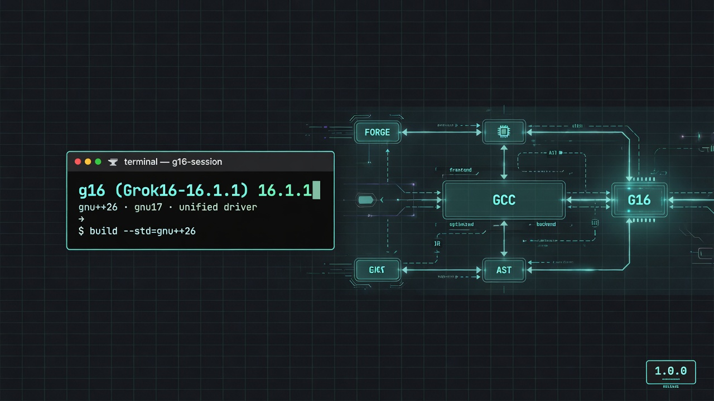
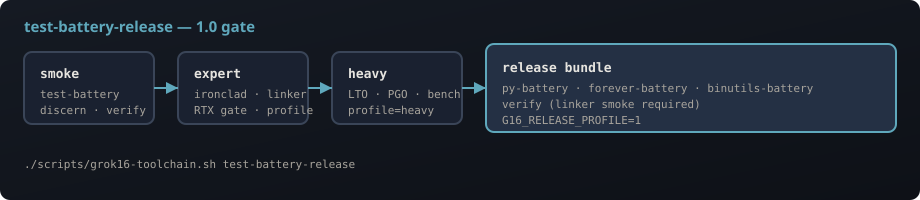

g16 with in-tree toolkits
test-battery-release| Doc | For engineers who need… |
|---|---|
| Release 2.0 | Single fabric, safety meld, upgrade from v1.0.0 |
| Single Fabric | 2.0 technology — one belt die, one field amplitude |
| Safety | Depth-field impossible, linear time, Ironclad gates |
| Getting Started | Bootstrap, rebuild modes, first verify |
| Architecture | Forge pipeline, unified driver, directories |
| Batteries | Validation tiers, CI gate, failure triage |
| Toolkits | gpy-16, binutils, language drivers in-tree |
| Linker | g16-ld, 16 targets, mandate flags |
| Profiles | field_opt, expert, heavy, RTX gate |
| Performance | Bench matrix, LTO/PGO, release rebuild |
| Reference | Commands, env vars, manifest paths |
| Master Coder | Indexed hub — every command and hook |